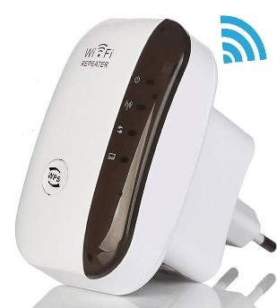
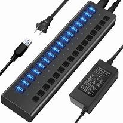
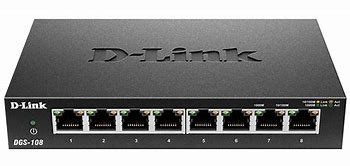
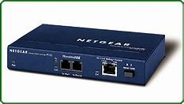
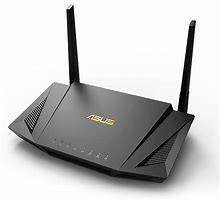

Tarea 5
|
Componentes |
Diferencias |
IP |
Uso |
Imagen |
|
Repetidor |
Nivel Físico, red local que regenera y retransmite información sin necesidad de almacenarla, no son capaces de filtrar en función del destino así que la retransmite bit a bit hacia todos los segmentos de salida o salidas, independientemente de su destino específico. |
No tiene IP propia |
Cuando pones un repetidor en tu casa para que llegue el internet a todos lados |
 |
|
Hub |
Reparte el ancho de banda entre sus salidas o puertos. Si recibe 1 señal de datos por alguna entrada la retransmite al resto de salidas, si recibe dos o más señales de datos simultáneamente por varias entradas (colisión) todas intentando acceder al canal de forma simultánea envía una señal de invalidación por todas las salidas, si recibe una señal de invalidación por una de sus entradas la retransmite a todas sus salidas. |
No tiene IP propia |
Sirve como un aumento de puertos como el usb pero no diferencia las direcciones de la info. |
 |
|
Switch |
Permite que se conecten varios dispositivos a una red local y tiene la capacidad de dirigir el tráfico entre ellos. |
Si tiene IP propia |
Conectar varios ordenadores en una red de oficina. |
 |
|
Bridge |
Conecta dos protocolos de comunicación diferentes y permite su comunicación traduciendo los datos. |
No tiene IP propia |
Conexión de dos departamentos en una empresa. |
 |
|
Router |
Permite conectar diferentes redes y tiene la capacidad de dirigir el tráfico entre ellas. |
Si tiene IP propia |
Conecta una red local (OFICINA O DEPARTAMENTO) con una red externa (WIFI). |
 |
Si se conecta un dispositivo a otro igual se conectan de forma cruzada, es decir con un cable crossover (para los cables de transmición y recepción cruzados) y si son dispositivos diferentes se conecta de manera recta (para los cables de transmición y recepción iguales o del miso orden).